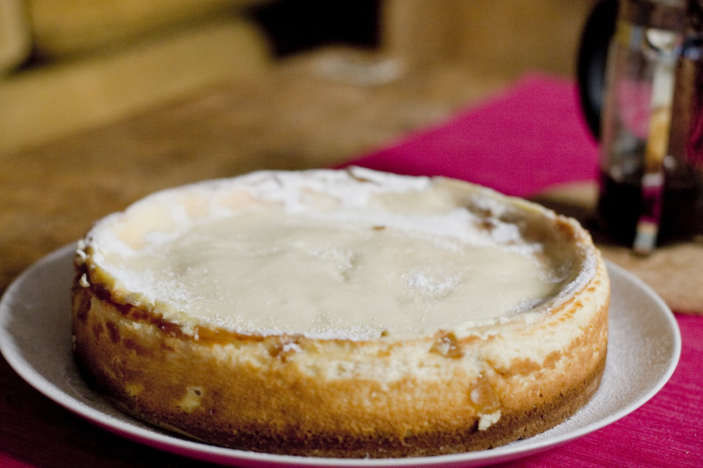

Cheesecake

Description
Cheesecake is a decadent dessert featuring a smooth, creamy filling made with cream cheese, sugar, eggs,
and sometimes sour cream. filling sits on top of a buttery crust, often made from crushed graham crackers.
Baked until set, cheesecake boasts a rich texture that can be dense or light depending on the recipe.
It's frequently topped with fruit, chocolate, or caramel for added flavor and visual appeal.
Ingredients
- Graham crackers (for crust)
- Butter
- Cream cheese
- Sugar
- Eggs
- Sour cream
- Vanilla extract
Steps
- Crush graham crackers and mix with melted butter for crust. Press into pan and bake briefly.
- Beat softened cream cheese with sugar until smooth.
- Mix in eggs one at a time, then sour cream and vanilla.
- Pour filling over crust and bake in a water bath (optional) until set.
- Chill completely before serving.